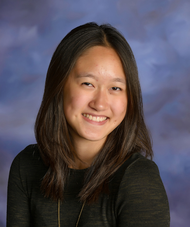

About

I'm Selena Qian, a current freshman at Duke University. I have not yet declared a major, but I'm interested in policy. I have been writing for The Chronicle, joined the ultimate frisbee team, and am part of the Science Olympiad Executive Board. I went to Carmel High School and was a distinguished graduate of the Class of 2017. There, I was also involved in newspaper, and took several art classes. Most of my work in this portfolio comes from those classes.